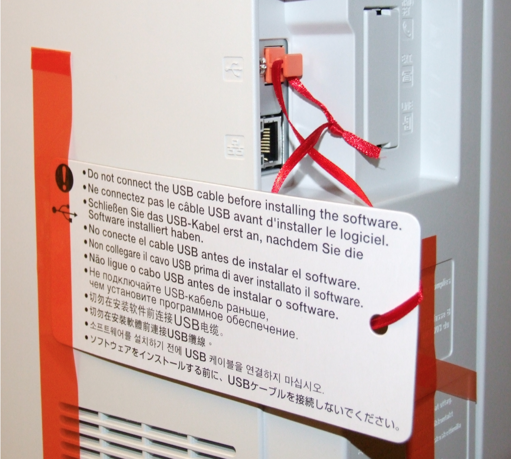

Canon MF8540Cdn einrichten
... oder: Windows ändert die Menschheit
Neulich wurde mein alter HP LaserJet 1200 durch ein schickeres Gerät ersetzt: Ein Canon MF8540CDn Farblaser mit Duplex und Netzwerkanschluss. Dann mal ran an den schweren Karton und auspacken...
Gerät anschließen
Beim Auspacken fällt mir schon eines auf.
Danke Microsoft! Ohne euch gäbe es den Beruf des USB-Stöpsel-Schleifen-Binders nicht, der millionenfach folgendes Schildchen an den Drucker bindet.
Bei Robert Lembke wäre das bestimmt ein lustiger Abend geworden. Machen Sie eine typische Handbewegung…
Seit Jahrzehnten wird um dieses Problem herum gebaut.

Erinnert mich irgendwie an das hier:

Was passiert wohl, wenn man es trotz dieser Warnung das Gerät an den Computer anschließt? -> Vermutlich das hier, da wackeln die Wände.
Drucken, wie es Apple versteht
Drucken vom Mac aus geht ganz einfach. Einfach aus der aktuellen Anwendung drucken, den Drucker suchen - drucken. Ab jetzt ist er als Standarddrucker bekannt. Keine Treiber, keine CD, einfach das Gerät benutzen.

Ganz genauso sieht es auf iPhone und iPad aus.
Aus der Anwendung einfach anfangen zu drucken, Drucker suchen, auswählen, drucken. Keine App installieren, geht einfach.
Drucken, wie es Microsoft versteht
Der Druckerhersteller gibt dem Kunden gleich fünf CDs mit auf den Weg. („Dieser Weg wird kein leichter sein…“)
Erst einmal die richtige CD finden, dann Software installieren.

Dann die CD einlegen, es kommt ein UAC Dialog, damit der Installer gleich mit Adminrechten loslegt. Soweit so gut.
Ich wähle die Einfache Installation (wird der Weg wohl doch einfach sein?).

Doch die Freude wird schnell getrübt:

Alternativ wähle ich die Suche in der Systemsteuerung unter „Geräte und Drucker“. Dort „Gerät hinzufügen“. Ein Canon taucht auf. Diesen einrichten.
Nach kurzer Zeit dann das:

Zum Glück hat Microsoft die Problembehandlung erfunden. „Da werden sie geholfen“ - oder auch nicht:

Problembehandlung abgeschlossen - Kunde steht im Regen. Problem nicht behoben.
Ich muss dann wohl die CD mal direkt als Admin eingeloggt einlegen. Also Anwendungen schließen, ausloggen, als Admin einloggen, die Prozedur noch einmal durchspielen - hoffen, dass es nun klappt. Ausloggen, wieder als normaler Benutzer einloggen, Anwendung öffnen und das Dokument drucken, das ich drucken wollte. Hoffentlich weiß ich bis dahin, was ich drucken wollte.
Fazit
Nach 10 Wochen mit einem Mac und 3,5 Jahren iPad gebe ich zu: Apple, du „verblödest“ mich, aber ich bin heilfroh, dass ihr der Menschheit zeigt, wie es funktionieren sollte. Das ist, was der Anwender will: Der will nur drucken.
Gerät auspacken, mit Papier, Strom und Netzwerk "füttern" - fertig.